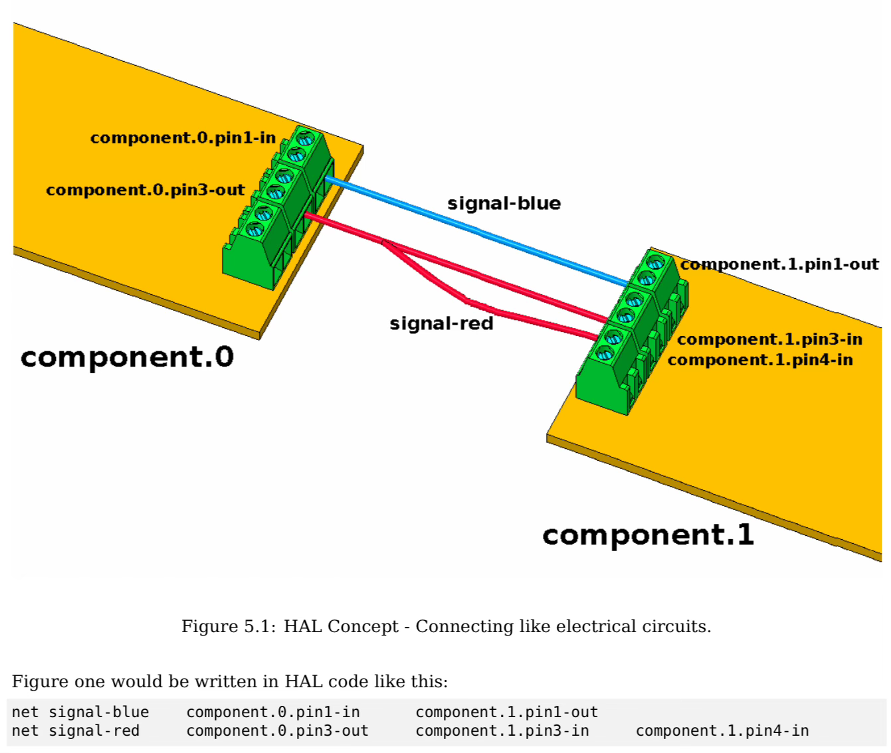

Pins & Signals
halmeter is a good way to observe the pins & signals.
HAL Commands
See also,
addf
The addf command adds a function to a real-time thread. If the StepConf wizard was used to create the configuration, two threads have been created (“base-thread” and “servo-thread”).
addf adds function functname to thread threadname. Default is to add the function in the order they are in the file. If position is specified, adds the function to that spot in the thread. A negative position indicates the position with respect to the end of the thread. For example 1 is start of thread, -1 is the end of the thread, -3 is third from the end.
loadrt
The command loadrt loads a real time HAL component. Real time component functions need to be added to a thread to be updated at the rate of the thread. You cannot load a non-realtime component into the realtime space.
Syntax and Example
|
loadrt <component> <options> |
loadrt components list: https://linuxcnc.org/docs/html/hal/components.html
loadusr
The command loadusr loads a non-realtime HAL component. Non-realtime programs are their own separate processes, which optionally talk to other HAL components via pins and parameters. You cannot load realtime components into non-realtime space.
net
The command net creates a connection between a signal and one or more pins. If the signal does not exist net creates the new signal. This replaces the need to use the command newsig. The optional direction arrows <=, => and <=> make it easier to follow the logic when reading a net command line and are not used by the net command. The direction arrows must be separated by a space from the pin names.
Syntax and Example
|
net signal-name pin-name <optional arrow> <optional second pin-name> |
In the above example home-x is the signal name, joint.0.home-sw-in is a Direction IN pin, <= is the optional direction arrow, and parport.0.pin-11-in is a Direction OUT pin. This may seem confusing but the in and out labels for a parallel port pin indicates the physical way the pin works not how it is handled in HAL.
A pin can be connected to a signal if it obeys the following rules
- An IN pin can always be connected to a signal.
- An IO pin can be connected unless there’s an OUT pin on the signal.
- An OUT pin can be connected only if there are no other OUT or IO pins on the signal.
The same signal-name can be used in multiple net commands to connect additional pins, as long as the rules above are obeyed.
setp
The command setp sets the value of a pin or parameter. The valid values will depend on the type of the pin or parameter. It is an error if the data types do not match.
Some components have parameters that need to be set before use. Parameters can be set before use or while running as needed. You cannot use setp on a pin that is connected to a signal.
Syntax and Example
|
setp <pin/parameter-name> <value> |
sets
The command sets sets the value of a signal.
Syntax and Example
|
sets <signal-name> <value> |
It is an error if:
- The signal-name does not exist
- If the signal already has a writer
- If value is not the correct type for the signal
unlinkp
The command unlinkp unlinks a pin from the connected signal. If no signal was connected to the pin prior running the command, nothing happens. The unlinkp command is useful for troubleshooting.
Syntax and Example
|
unlinkp <pin-name> |